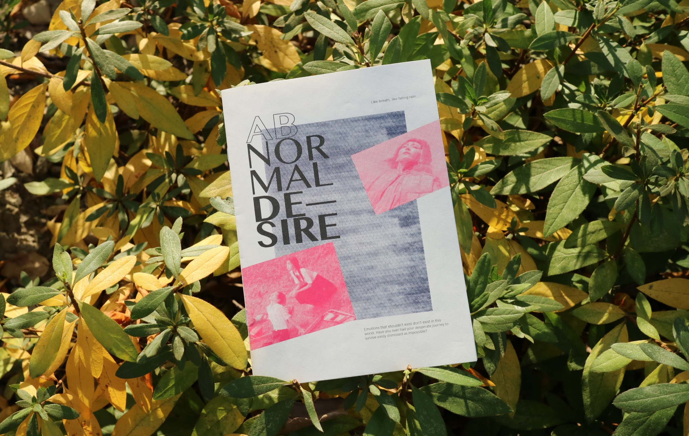
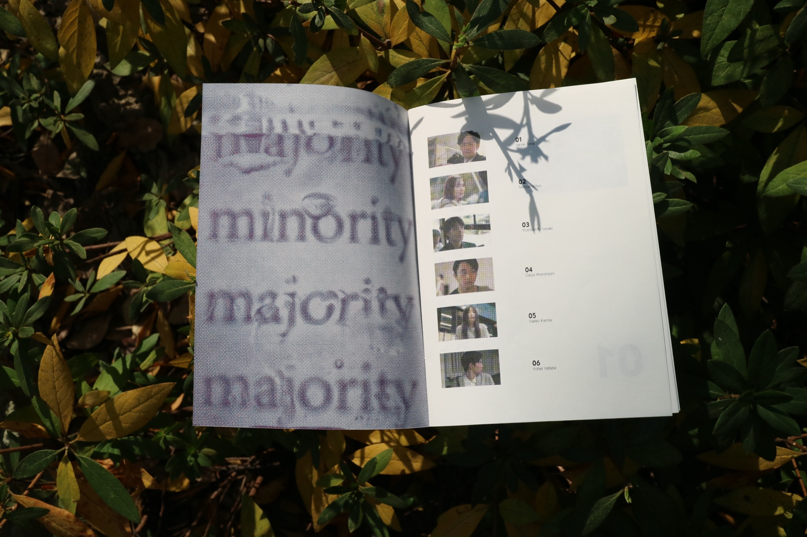
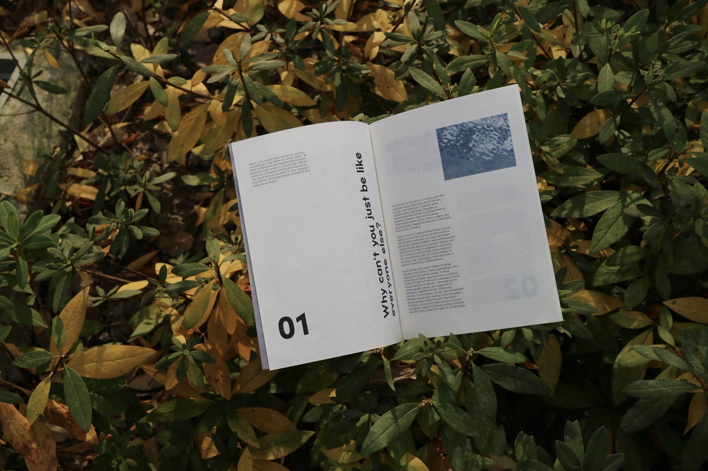
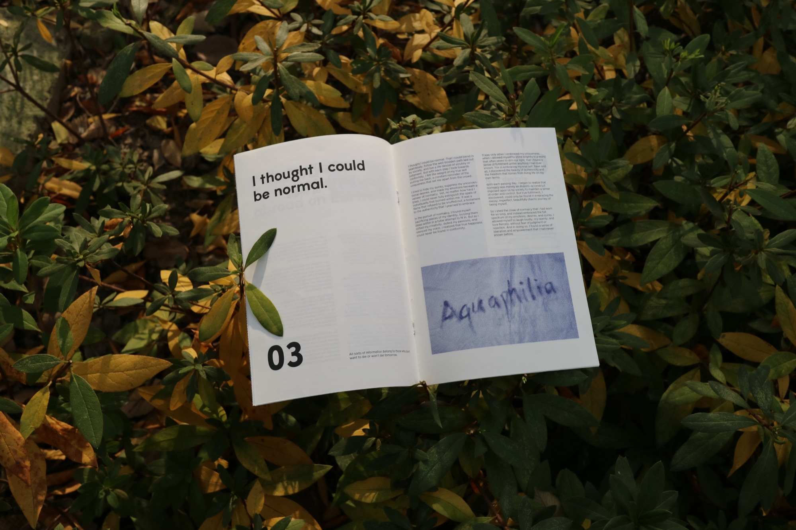
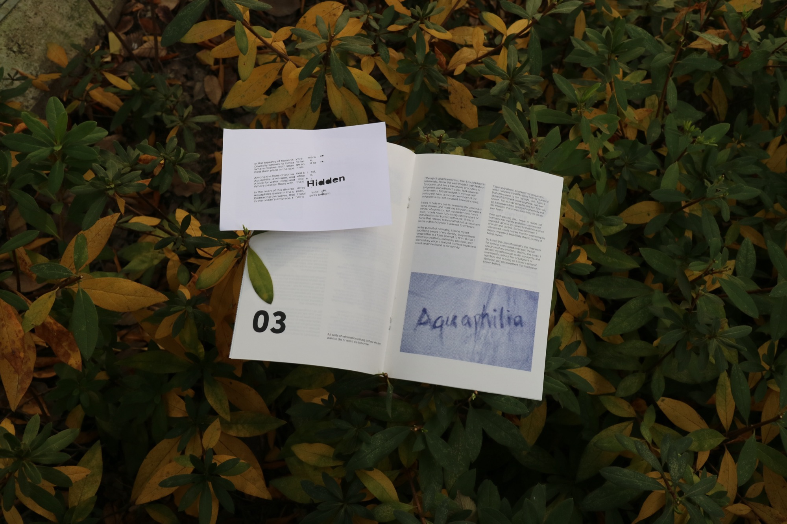
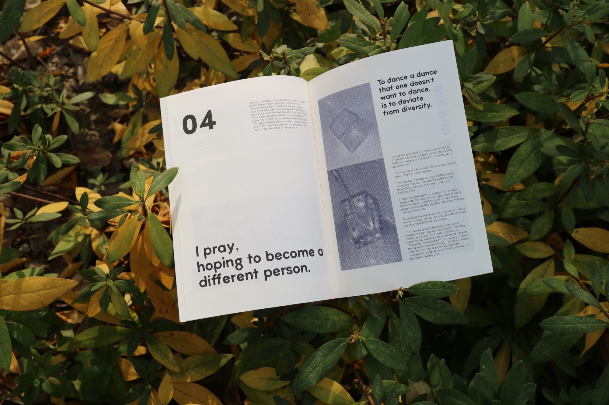
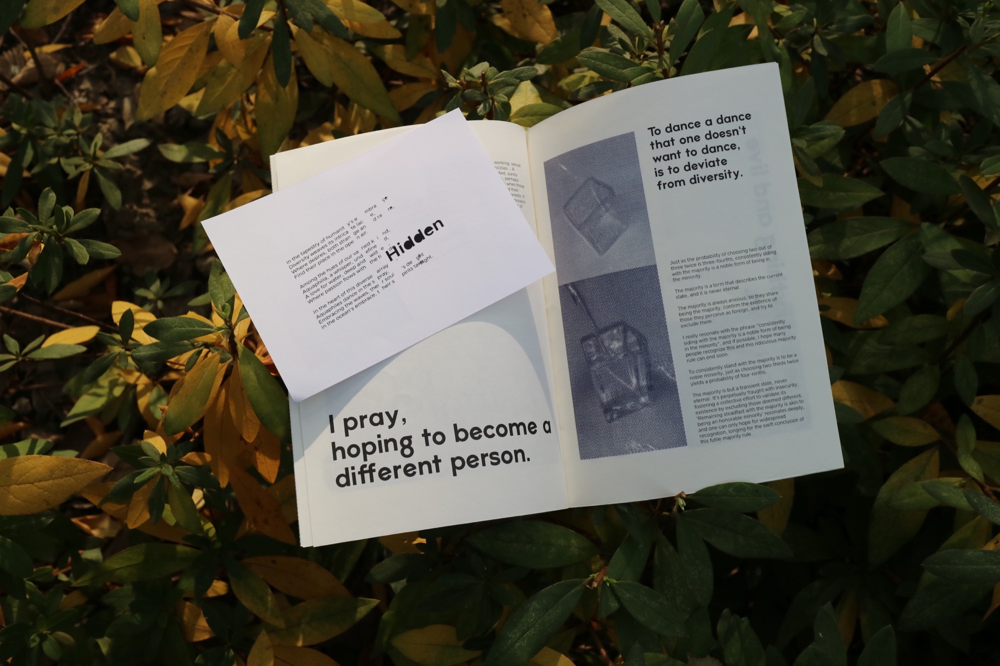
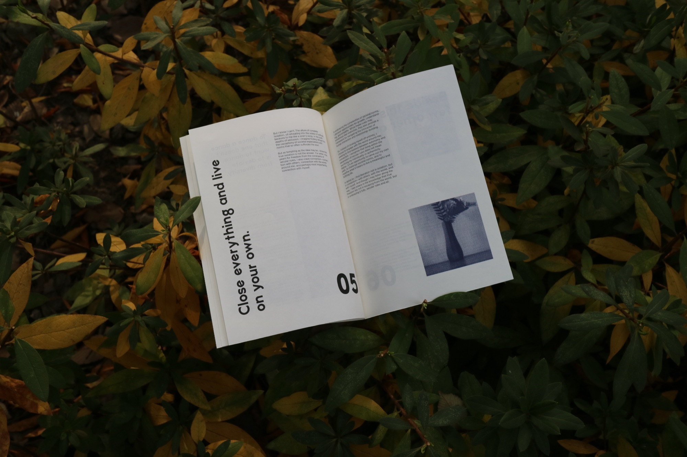
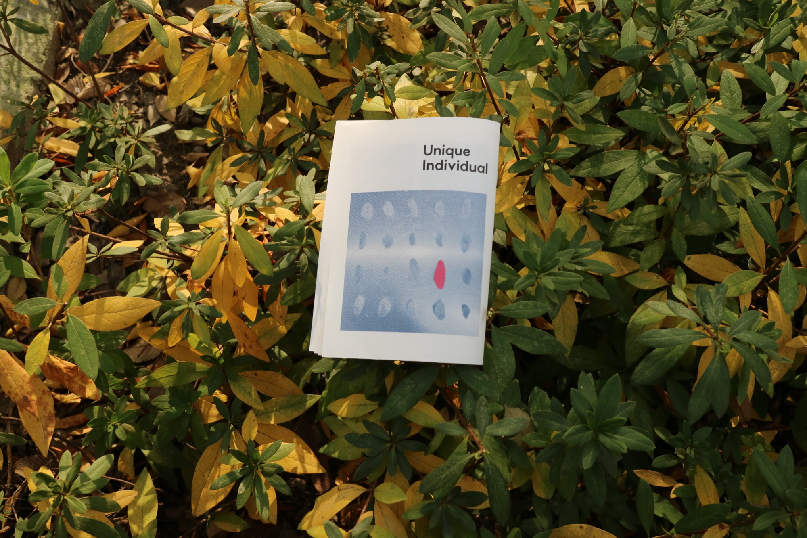

Abnormal Desire: This booklet was created for the Japanese film Abnormal Desire, written by Ryo Asai. The film presents an ensemble of characters, with water as a recurring motif that connects individual perspectives and narratives. Reflecting this structure, the booklet is organized into distinct chapters, each unfolding through a different character's point of view, allowing the stories to flow and intersect gradually.








